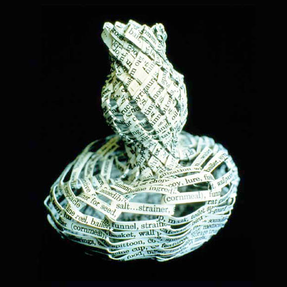

WORKING NOTE by Katherine Ng
SPIRIT VESSEL is letterpress printed artist book produced through a Brody Arts Fund Grant. The hand set type was printed on two sides of the paper, then cut into strips (pages) and woven into the shape of a gourd. The text lists the uses of gourds from different cultures and so does the title of this piece. In the Chinese culture, the gourd is used as a container to capture evil spirits, whereas in the Japanese culture, the gourd is used as a vessel for intoxicating spirits.


BIO:
Katherine Ng, a native of Los Angeles, is a book artist, origamist and
printer. Her artist books are sculptural in structure and document various
cultures within society: Asian American, lesbian, mental health and cross-cultural
similarities. Her books are collected internationally and exhibited throughout
the United States. She is the director of the letterpress studio at the
Armory Center for the Arts in Pasadena were she teaches letterpress printing
and book arts to children, teens and adults.
go to this issue's table of contents